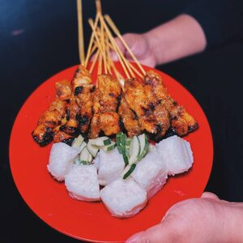

Chicken Satay with Peanut Sauce

Easy and authentic
Delicious chicken satay or grilled chicken skewers marinated with spices and served with peanut sauce.
- Prep: 1 hr 5 mins
- Cook: 20 mins
- Total: 1 hr 25 mins
- Servings: 6 people
Ingredients
For the Preparations:
- 2 lbs boneless and skinless chicken thigh and leg meat
- Bamboo skewers, soaked in cold water for 2 hours
- 1 cucumber, cut into small pieces
- 1 small onion, quartered
- Oil for basting
For the Chicken Marination:
- 3 tablespoons oil
- 2 stalks lemongrass, white parts
- 2 cloves of garlic, peeled
- 6 small shallots, peeled
- 2 teaspoons turmeric powder
- 1 teaspoon coriander powder
- 1 teaspoon chili powder
- 1/2 tablespoon salt or more to taste
- 2 tablespoons sugar or honey
For the Peanut Sauce:
- 1 cup dry roasted peanuts, unsalted
- 1 heaping tablespoon tamarind pulps
- 1/4 cup vegetable oil
- 1 cup water
- 1/2 teaspoon salt or to taste
- 2 1/2 tablespoons sugar, palm sugar preferred
- 1 teaspoon coriander powder
- 1 tablespoon sweet soy sauce (Kecap Manis)
- 8 dried red chilies, seeded and soaked in warm water
- 3 cloves garlic, peeled
- 4 cloves small shallots or pearl onions, peeled
- 1 stalk lemongrass, cut into 3 strips, use only 1 strip at the bottom
- 1/2 inch galangal, peeled
Step by step
For Chicken Satay:
- Cut the chicken meat into small cubes. Set aside.
- Blend all the marinade ingredients in a food processor. Add a little water if needed.
- Combine the chicken and the Marinade together, and stir to mix well. Marinate the chicken for 6 hours in the fridge, or best overnight. When ready, thread 3-4 pieces of the chicken meat onto the bamboo skewers.
- Grill the chicken satay skewers for 2-3 minutes on each side until the meat is fully cooked and the surface is nicely charred, on both sides. Baste and brush with some oil while grilling
For Peanut Sauce:
- Crush the peanuts with a mortar and pestle or use a food processor to ground the peanuts. Set aside. Ground peanut for peanut sauce.
- In a small bowl, add the tamarind pulps plus 1/4 cup warm wat in a small bowler. Set aside for 15 mins. Squeeze and extract the juice from the tamarind pulps and discard. Keep the tamarind juice. Tamarind juice for peanut sauce.
- Chop the Spice Paste ingredients coarsely, transfer to a food processor and blend until very fine. Add a few tablespoons of water to help blending. Peanut sauce ingredients
- In a sauce pan, heat the oil on medium heat and add the spice paste. Peanut sauce spice paste
- Add the remaining two strips of lemongrass to the spice paste. Cook the spice paste until it becomes aromatic and smell spicy. Making peanut sauce in a sauce pan.
- Add the ground peanuts, water, tamarind juice, salt, sugar, coriander powder and s eet soy sauce. Stir to combine well.
- Turn the heat to medium-low heat, stir continuously for about 5-10 minutes or until the peanut sauce thickens to your desired consistency. The oil and the peanut sauce should separate when it's done. Peanut sauce in a saucepan.
- Let cool at room temperature and serve the peanut sauce with satay